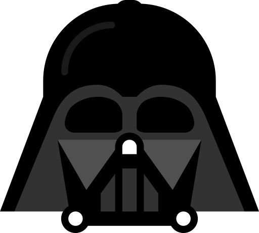

Francesco Mannarino
Software Development Specialist — EngX
A glimpse at what the community has been up to lately.
March 14, 2025
A deep dive into real-world challenges when deploying large language models at enterprise scale — latency, cost, and hallucination mitigation.
February 6, 2025
How our infra team built an Internal Developer Platform that reduced time-to-deploy from days to minutes and improved developer happiness.
January 22, 2025
An honest retrospective on applying Domain-Driven Design to a legacy monolith migration, including the trade-offs nobody talks about.